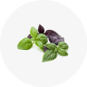

французский связной
Напиток, вся прелесть которого заключается в декоре и ритуале употребления.
Ингридиенты
- Водка «Mont Blanc» - 50 мл
- Клубника - 1 шт
- Цедра апельсина
- Веточка базилика



Подается в рюмке-шоте, с клубникой и базиликом, надетыми на шпажку, которая в свою очередь кладется поверх рюмки. Выпив Mont Blanc, необходимо тут же закусить клубникой и базиликом.
Подается в рюмке-шоте, с клубникой и базиликом, надетыми на шпажку, которая в свою очередь кладется поверх рюмки. Выпив Mont Blanc, необходимо тут же закусить клубникой и базиликом.
Подается в рюмке-шоте, с клубникой и базиликом, надетыми на шпажку, которая в свою очередь кладется поверх рюмки. Выпив Mont Blanc, необходимо тут же закусить клубникой и базиликом.